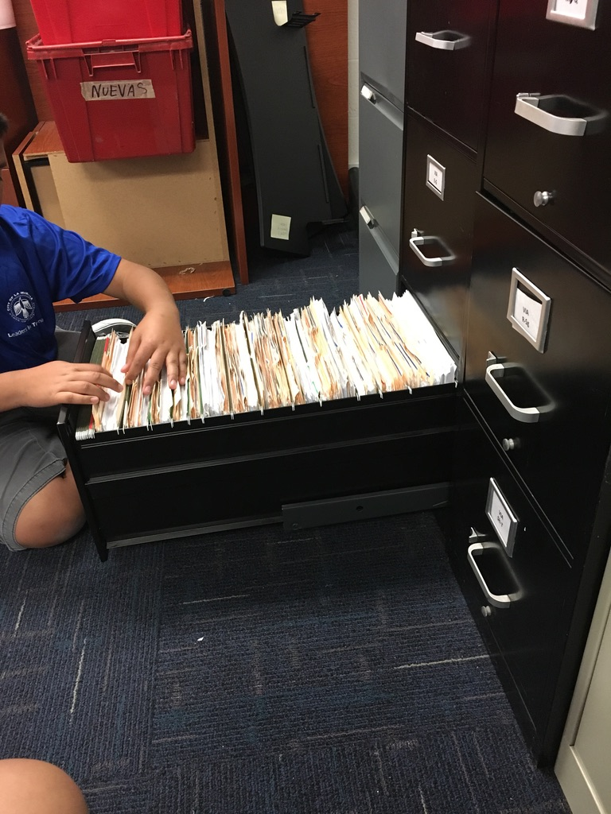
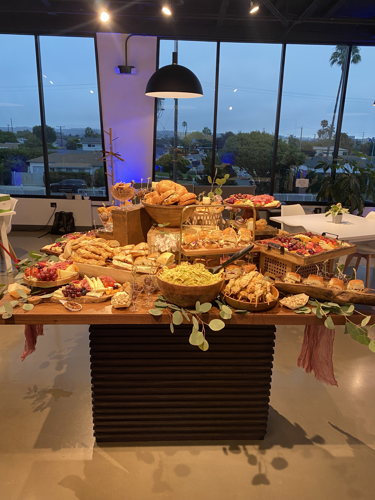
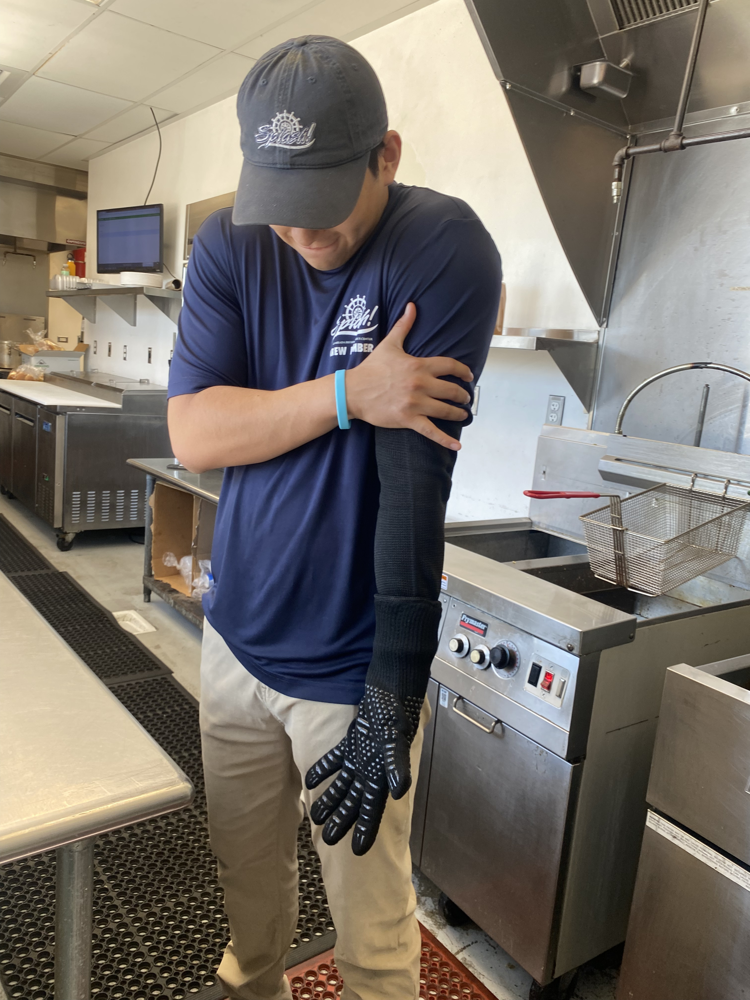
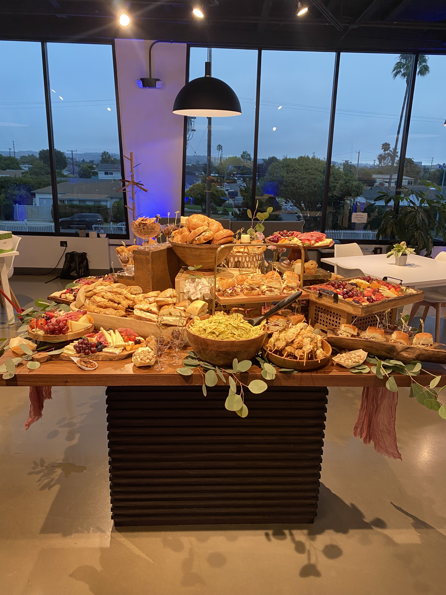
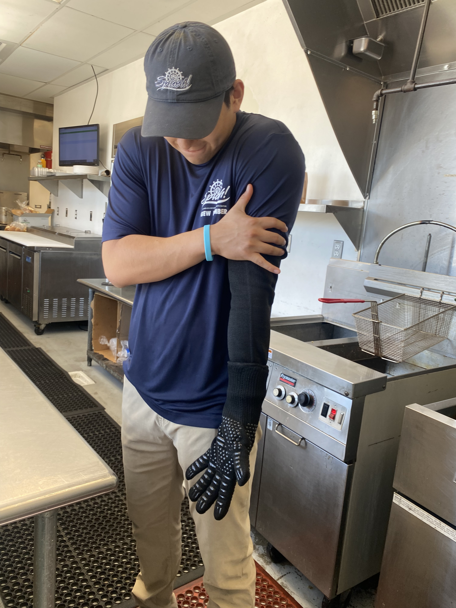

Joel Coronado
My name Is Joel Coronado and I come from a very hard working family. I grew up in a small town named La Mirada, just southeast of Los Angeles. I really started getting involved in my community in middle school. We had a mandatory volunteer project that introduced me into the countless opportunities in my city. I enjoyed myself so much that I continued to volunteer long after the project. I can still vividly remember the warm feeling of helping my community through numerous ways. Some of them include filing important documents, child care summer programs, Event set up and work, and working the front desk for the city's call center. I have also worked in my city for two years being a Recreation Aide and Aquatics Aide.
I pride myself on my work ethic and my ability to pick up tasks quickly. Some qualities that I possess are my adaptability and versatility. I am a jack of all trades or I know a little about a lot. My adaptability has come in handy when I have faced some difficult situations. Such as in my workplace I have made split second decisions to keep me and my work place flowing. I have learned a lot over the years and consider myself a step ahead of most people my age. I am glad to have had the opportunity to gain knowledge and work experience in the ways I have.
My relationship with God and my family is number one for me in everything that I do. Most decisions I have made have been in consequence of my family. I decided to further my education at UCR due to the proximity of my home. All my achievements I give thanks to God for allowing me the opportunities and opening doors for me. Through this foundation I hope to achieve great things, always remembering who got me there. Psalms 18:2 says The LORD is my rock, my fortress, and the One who rescues me; My God, my rock and strength in whom I trust and take refuge; My shield, and the horn of my salvation, my high tower—my stronghold. This verse is what I base my life around, at the end of the day he is the one I owe my life to.
Experience
Aquatics Aide
• Certified in CPR
• Customer service
• Experience in a very fast paced environment
Charcuterie Specialist
• Responsible for transportation and set up of charcuterie tables
• Catered special events
• Food handler certified
Community Service volunteer
• Set up special events for the city such as the halloween Fest, and chili holiday
• Filed important documents for the city of La Mirada
• Assisted running child care programs
• Worked in the front desk for the City's call center
Education
UC Riverside
Portfolio




 